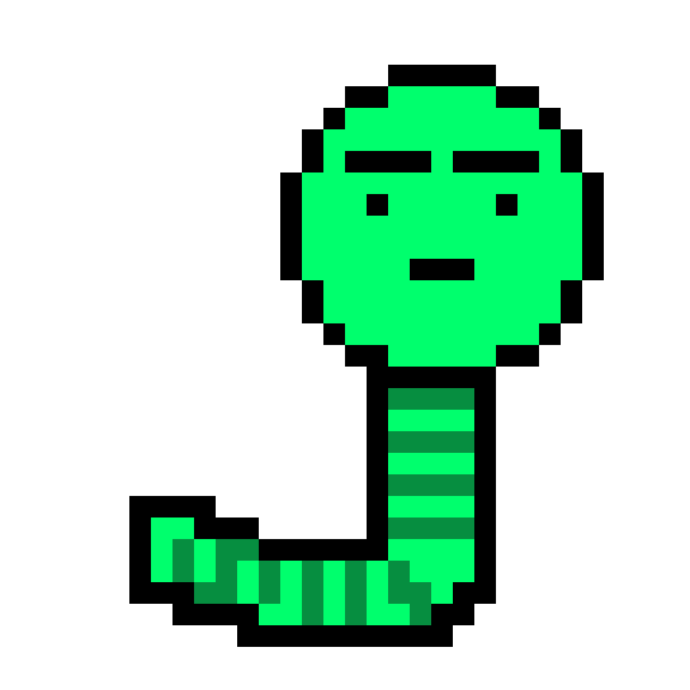

SQL Slammer technical details
Effect of the Worm
Detected for the first time on internet on January 25, 2003 at 5:30 am (GTM). It was too late discovered in most countries of the world. Hoverwer, there are unconfirmed reports that traces of worms were detected as early as January 20. The worm creates a large amount of network packets, overloads servers and routers, and slows down netrwork traffic.
|
 |
|---|---|
Technical details
The worm's code is 376 bytes long, which means it was handwritten and optimized in assembly language. As already mentioned, the worm doesn't write itself to the hard drive, but only exixts as network packets and in current processes on infected machines. In that sense, Slammer is like CodeRed.
|
SQL_Slammer_Worm |
Mattia Gianinazzi |
|
|---|